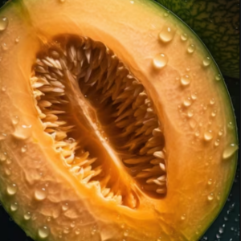

Melão Galia

| Nome: |
Melão Galia |
| Preço uni: |
R$ 5,48 |
| Fornecedor: |
VM Hortifruti |
| Código: |
5293 |
| Peso aproximado uni: |
1,1kg |
Descrição
O melão Galia, uma verdadeira joia da fruticultura, é uma das variedades mais apreciadas entre os amantes de frutas pelo seu sabor doce e aroma delicado. Originário do Oriente Médio, o melão Galia é uma fruta híbrida, resultado do cruzamento entre o melão cantalupo e o melão Honeydew. Visualmente, o melão Galia é uma obra de arte da natureza. Sua casca possui uma coloração verde clara com uma rede de sulcos delicados, conferindo-lhe uma aparência exótica e convidativa. Ao tocá-la, sua superfície revela-se macia e ligeiramente perfumada, indicando a maturidade e frescura da fruta. Ao cortar o melão Galia, revela-se uma polpa suculenta e de um tom alaranjado suave, salpicada de sementes pequenas e redondas. A textura é firme, porém delicada, derretendo na boca com cada mordida. Seu sabor é uma sinfonia de doçura equilibrada com um toque refrescante, tornando-o uma escolha irresistível em dias quentes de verão. Além de seu sabor delicioso, o melão Galia é conhecido por ser uma fonte rica em nutrientes essenciais, como vitaminas A e C, potássio e fibras. É uma opção saudável para satisfazer os desejos de doçura sem comprometer a dieta. Versátil e delicioso, o melão Galia pode ser apreciado de várias maneiras. Desde servido fresco em fatias como uma sobremesa refrescante até adicionado a saladas de frutas, smoothies ou até mesmo pratos salgados para um toque de doçura tropical. Com sua beleza exuberante e sabor irresistível, o melão Galia é verdadeiramente uma fruta que agrada a todos os sentidos.